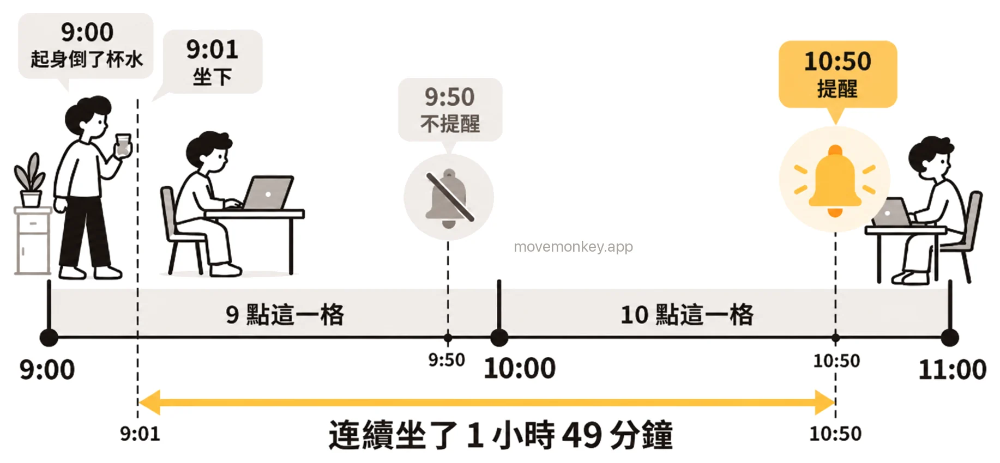
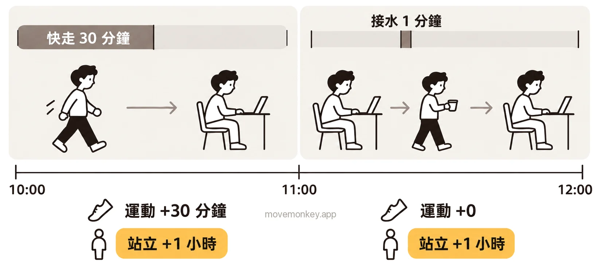

Apple Watch 的站立是怎麼算的？
Apple Watch 站立怎麼算？
Apple Watch 依整點一小時一小時地算站立：一小時裡站起來並活動至少 1 分鐘，這一小時就算站過，記為 1 個站立小時。
Apple 的說明：「藍色的『站立』圓圈顯示你一天內每小時至少站起來活動 1 分鐘的次數。」[1]
「健康」App 裡還有一項「站立分鐘數」，記的是每小時裡你站著和活動了幾分鐘。Apple 的說明：「每小時贏得至少一個站立分鐘也可協助你贏得站立圓圈中的小時。」[2]所以，一小時裡站起來活動了 1 分鐘和 40 分鐘，在「站立」圓圈上都只算 1 個小時，差別只會反映在站立分鐘數裡。
站立小時只說明這一小時裡有沒有站過，不代表你連續坐了多久：例如 9:00 起身倒杯水，9 點這一格就算站過；之後一直坐到 10:50，已經連續坐了 1 小時 49 分鐘，「站立」圓圈上卻看不出來，見 Apple Watch 站立提醒是怎麼算時間的？如果想在連續坐久了時收到提醒，可以考慮久坐提醒 App MoveMonkey，它從你上次起身開始計時。

Apple Watch 怎麼判斷你站起來了？站著不動算嗎？
只站著不動，不一定算：Apple 要求的是站起來並活動，不只是站著。
Apple 介紹活動記錄圓圈時說：「別只是站著不動。站著時，可以動一動。裝個水、伸懶腰、跟同事碰頭⋯⋯」[3]
2024 年，英國鄧迪大學的研究人員分析了 20 位 Apple Watch 使用者在 2022 年 8 月的資料，共約 9,200 個小時，看一小時有沒有記為站立小時，和哪些指標有關。研究發現，關係最大的是步數和動態能量：一小時裡超過 97.5 步，或動態能量超過 100 千焦耳（約 24 大卡），這一小時被記為站立小時的可能性就明顯變大。作者也認為，是否記為站立小時，可能不只取決於一個因素。[4]
Apple Watch 站立和運動有什麼差別？
「站立」圓圈記的是一天裡有幾個小時站起來活動過，「運動」圓圈記的是有多少分鐘的活動達到快走以上的強度。
Apple Watch 的三個活動記錄圓圈分別記什麼
| 圓圈 | 記什麼 | Apple 的說明 |
|---|---|---|
| 活動（紅色） | 燃燒的動態卡路里 | 「紅色的 Move（活動）圓圈顯示你已燃燒的動態卡路里。」[1] |
| 運動（綠色） | 強度達到快走以上的分鐘數 | 「當你完成至少 30 分鐘的快走或更劇烈運動時，你的運動圓圈也就圓滿畫圈。」[3] |
| 站立（藍色） | 站起來活動過的小時數 | 「藍色的『站立』圓圈顯示你一天內每小時至少站起來活動 1 分鐘的次數。」[1] |
例如 10:00 到 10:30 快走 30 分鐘，「運動」圓圈加 30 分鐘，「站立」圓圈只加 1 個小時，因為這 30 分鐘都在 10 點這一個小時裡。

Apple Watch 站立 12 小時、「4/12」是什麼意思？目標怎麼改？
「4/12」表示今天已有 4 個站立小時，站立目標是 12 小時。
Apple 介紹活動記錄圓圈時的說明是：「當你在一天中不同的 12 個小時，都能起身動動 1 分鐘，你的站立圓圈也就圓滿畫圈。」[3]
站立目標可以設為 6 到 16 小時。[5]watchOS 7 起能更改[6]，watchOS 11 起還能按星期幾分別設定[7]。
- 在 Apple Watch 上打開「活動記錄」App。
- 轉動數位錶冠到「站立」圓圈，然後點一下更改目標的按鈕。
- 點一下「更改今天目標」或「更改每日目標」，用減號或加號調整，然後點一下「設定」。
想按星期幾分別設定：點一下「更改每日目標」後，再點一下右上角的「目標類型」按鈕，然後點一下「排程」，調整後點一下「設定排程」。[5]
Apple Watch 站立為什麼記不準？
站了卻沒記到，可能是 Apple Watch 沒戴好；不少使用者還反映，手臂一直沒怎麼動時，站著也可能不算。
- Apple Watch 戴得太鬆或太緊，或是和手腕之間隔著襯衫袖子，可能偵測不到它戴在手腕上。[8]如果關閉了「手腕偵測」，Apple 的說明是：「會影響部分『活動記錄』測量。」[8]
- 只帶 iPhone、沒戴 Apple Watch，不會記錄站立。「站立」圓圈只有在佩戴 Apple Watch 時才會顯示[9]，站立分鐘數也由 Apple Watch 記錄[2]。
- 不少使用者反映，Apple Watch 判斷站立主要看手臂的擺動。推購物車、站著煮飯、在站立式辦公桌前工作時，手臂不太擺動，站著也可能不算；坐著織毛衣時手臂一直在動，反而可能被算作站立。[10]

久坐提醒 App · 即將在 App Store 推出
MoveMonkey：從上次起身開始算的久坐提醒
從你上次起身開始，坐滿你設定的時間（30、45、60 或 90 分鐘），小猴子才會提醒你。適用於 iPhone 和 Apple Watch，只用 iPhone 也可以；走動或站立後自動重新計時。
早上等你起身後才開始計時，午休可以設為不提醒，提醒時段也由你設定。
點一下「起身動動」，只要走上 1 分鐘，小猴子還會為你喝采。
核心功能永久免費，沒有廣告。
看更詳細的介紹 →